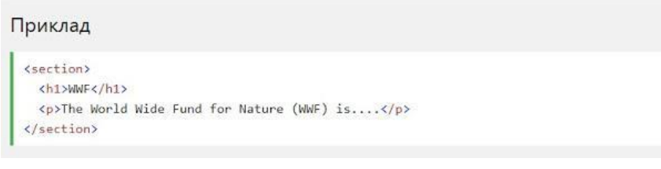
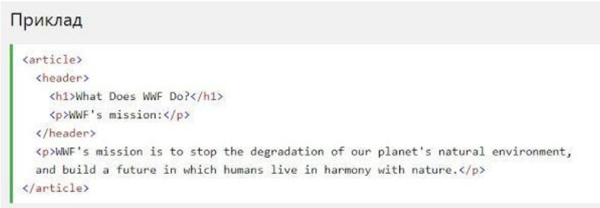
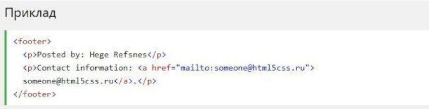

Семантичний елемент чітко описує його значення як для браузера, так і для розробника.
Приклади не семантичних елементів: < div> і < span>- нічого не говорить про його вміст.
Приклади семантичних елементів: < form>, < table> і < article> - чітко визначає його зміст.
Семантичні елементи HTML5 підтримуються у всіх сучасних браузерах.
Крім того, ви можете "навчити" старих браузерів, як обробляти "невідомі елементи".
Прочитайте про це в підтримці браузера HTML5.
Елемент < section> визначає розділ в документі.
Згідно з документацією в3к'с HTML5: "розділ представляє собою тематичну угруповання контенту, зазвичай з заголовком".
Домашня сторінка зазвичай може бути розділена на розділи для ознайомлення, змісту і контактної інформації.
Елемент < article>визначає незалежний, автономний вміст.
Стаття повинна мати сенс самостійно, і вона повинна мати можливість читати його незалежно від іншої частини веб-сайту.
Елемент < header>задає заголовок для документа або розділу.
Елемент < header> повинен використовуватися в якості контейнера для вступного змісту.
В одному документі може бути кілька елементів < header>.
У наступному прикладі визначається заголовок для статті:
Елемент < footer> вказує нижній колонтитул для документа або розділу.
Нижній колонтитул зазвичай містить автора документа, інформацію про авторське право, посилання на умови використання, контактні дані і т.д.
В одному документі може бути кілька елементів < footer>
